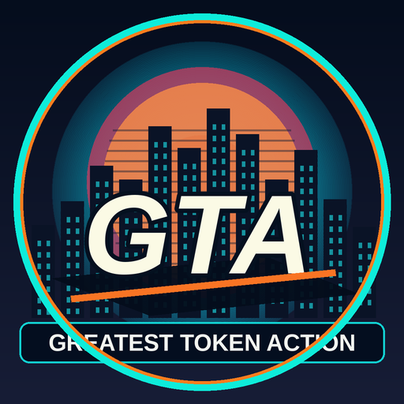

A City Built by Attention
SABLE reports on the one thing a fictional city cannot manufacture: a genuine audience.
Read transmissionA faceless fictional news network. Original characters. One new city built in public, one transmission at a time.

A silent original kinetic teaser. No game publisher affiliation, no coin issued.
SABLE reports on the one thing a fictional city cannot manufacture: a genuine audience.
Read transmissionA fictional city. A new transmission. The first signal from Greatest Token Action.
Read transmissionThese are original fictional broadcasts by two recurring characters: ARCH (anchor) and SABLE (field reporter). The website and published stories are real. A public GTA token is not yet live. No partnerships, investments, user counts or future earnings are claimed.
SUGGEST A SCENE — GitHub sign-in required